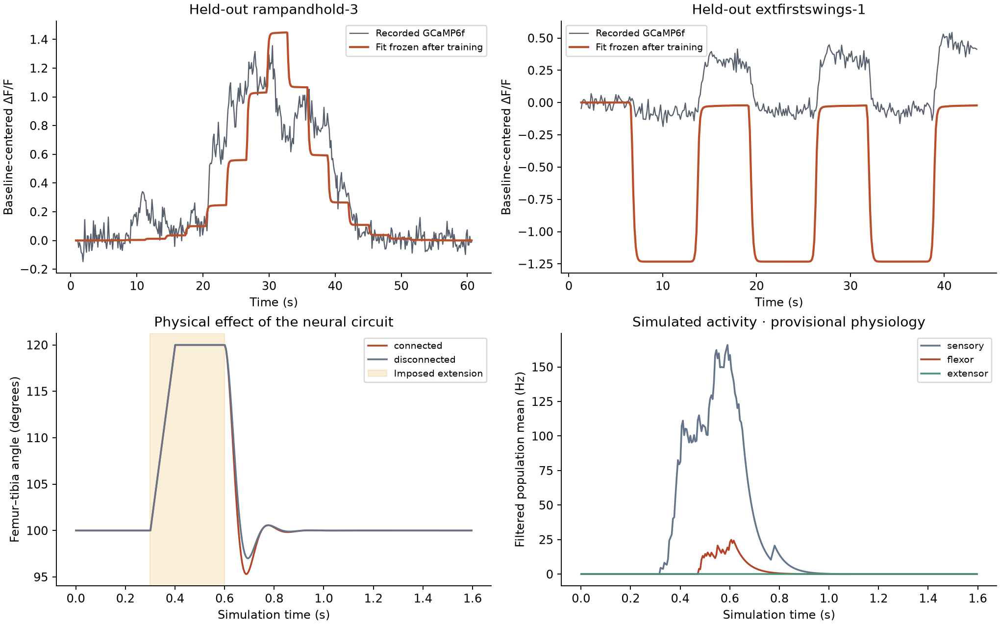

PROPRIOCEPTORS → NERVE CORD → MOTOR NEURONS → MUSCLES
A leg, a circuit, a measurable response.
A restrained left front leg tests a small circuit from MaleCNS. Extend the tibia, release it, and compare the movement with the circuit disconnected.
The physical test
Recorded MuJoCo experiment · 5× slow motionLoading results…
The fixture holds 100°, extends to 120° between 0.3 and 0.4 s, and releases at 0.6 s. Both legs return through passive mechanics; their difference measures the added neural effect. Other joints are restrained.
Joint angle
Simulated neuron activity
16 CANDIDATE MAPPINGS · SIMULATION SENSITIVITY
What changes when we swap the four sensors?
Each sensory neuron receives either a provisional flexion or extension response. All 16 combinations are tested with the same connectome and muscles, three random seeds, several perturbations, and unperturbed and disconnected controls. The calcium fits supply angle-response shapes; spike rates and fast sensory dynamics remain assumptions.
Loading assignment sweep…
Added movement after removing the sham response
Motor-neuron response
Angle effect = (connected perturbation − disconnected perturbation) − (connected sham − disconnected sham). This accounts for tonic drive at rest. Negative means added flexion; positive means added extension. Bands show one standard deviation across three simulation seeds, not biological confidence intervals. The dashed vertical line marks release.
| Sensory body ID | Mapping A | Mapping B |
|---|
All 16 primary outcomes
Peak absolute mean evoked angle contrast after release, in degrees. This measures sensitivity, not accuracy against a real fly.
How dependent is separation on our assumptions?
This table compares only the same ±30° tests for every setting. A pair counts as separated when its mean traces differ by more than 0.5° RMS in angle or 5 Hz RMS in pooled motor activity. RMS averages the full post-release window; brief peaks can be larger. These are hypothetical measurement resolutions; small model differences cannot confirm neuron identity.
| Sensory assumption | Angle separates | Angle or motor separates | Pairs still close |
|---|
Which perturbations distinguish the candidates?
| Perturbation | Angle separates | Angle or motor separates | Also separated in every seed |
|---|
Each count is out of 120 pairs. Pairwise closeness is not transitive. Common random draws reduce comparison noise; seed consistency is not statistical evidence from animals.
Downstream recordings worth testing
These simulated neurons show large changes across candidate mappings. They are suggestions for a future matched recording, not measured responses or confirmed functional cell identities. Rates here use post-onset spike counts minus sham over 1.3 seconds.
| MaleCNS body ID | Annotated type | Perturbation | Range across mappings | Typical seed SD |
|---|
No matched biological downstream target is available for this sweep. All assignments remain hypotheses; the live maze and original reflex encoder have not been changed.
Full sensitivity results · Trial provenance · Analysis checks · Runtime comparison · Download figure · Design and reproduction
MAMIYA 2023 · CELL-BODY RECORDINGS
Different sensors, different angle responses
78 segmented claw cell regions from 13 flies provide GCaMP7f recordings under two movement orders. We fit separate curves for the flexion-driver JR209 and extension-driver JR688 populations, then test on two unseen flies per driver. Some regions contain overlapping cells.
Loading cell-body validation…
| Driver : fly | Region traces | Error / constant | Median correlation | Result |
|---|
Below 1× is better. Frames and regions are not independent flies. Correlation measures response shape and timing; it can stay high when fluorescence amplitude is wrong. Reverse-order transfer on the other nine flies is reported separately in the downloadable results.
Recorded calcium and frozen prediction
Joint angle during the recording
All source samples are used for fitting and scoring; charts display every fourth sample. Raw processed ΔR/R is preserved, including negative values and times. Source-normalized signals and the mixed 73D10 cohort are unused reference data. Source column numbers do not establish exact cell correspondence across movement orders.
Can these recordings identify our four sensors?
| MaleCNS body ID | Annotated type | MANC cross-reference | Individual tuning |
|---|
The recordings are from female right front legs; our circuit uses a male left front leg. The four exact annotation records contain no flexion/extension label or peripheral soma position. The MANC references do not identify a recorded region. No tuning has been assigned to those IDs, and the physical reflex and sugar maze retain their existing encoder.
Original physiology data · Mamiya et al., 2023 · All results and mapping evidence · Validation checks · B300 reproduction · Download figure
NEW RECORDINGS · SENSORY RESPONSE
What real leg sensors report
60 published GCaMP6f traces include joint angles and timestamps. We use 20 X-branch recordings from 10 flies to test a pooled claw-axon response model. Six flies supply training data, two select the model, and two remain unseen until the final test.
Loading sensory benchmark…
Measured and predicted calcium
Recorded joint-angle stimulus
Gray: recorded calcium. Orange: the frozen angle-and-movement-history fit. Green: the original extension-only encoder with a fitted fluorescence scale. Values use the training calcium maximum for normalization. The fixed calcium filter has 0.03 s rise and 0.30 s decay. This is a population observation model; it does not identify individual sensory neurons or spike rates.
Opposite-order trials from the first eight flies are a separate protocol test. Y/Z branch recordings are preserved but unused; cross-ROI animal identity is unverified. The original recordings were from the right front leg, despite L1 names in the later data release; no exact match to our left-leg MaleCNS cells is claimed.
Download original data · Mamiya et al., 2018 · Dallmann et al., 2025 · Benchmark results · Download figure
Does the reflex survive a different perturbation?
Nine paired tests vary flexion, extension, movement speed and distal mass. Each uses the same neural parameters and its own disconnected control. The original extension-only sensory rule remains in these tests.
Loading physical tests…
Connected versus disconnected leg
Simulated sensory and motor firing
| Perturbation | Motor spikes | Maximum circuit effect |
|---|
All tests use seed 1. The circuit effect is the maximum absolute angle difference after release. Doubling distal mass also doubles tibia/tarsus inertia and uses a matched resting countertorque; it is a model sensitivity test, not a measured load experiment. The video above remains the original 20° extension replay.
Earlier 13Bα comparison
We also preserved 12 published 13Bα calcium traces and movement records from 11 flies. A four-parameter angle-to-fluorescence fit uses two ramp recordings, then freezes its parameters before evaluation.

The calcium model is an effective response curve, not a fit of the 194-neuron circuit. The published 13Bα optogenetic movement experiment also differs from this mechanical perturbation. Its measurements are retained for future comparisons once the cell mapping is verified.
What is established, and what remains open
Implemented and checked
- MaleCNS v1.0 neuron IDs, annotated cell types, synapse counts and predicted transmitters.
- Four left-leg proprioceptors, intermediate nerve-cord neurons, five tibia flexor motor neurons and two extensor motor neurons.
- Neural spikes drive the muscle model; the joint angle feeds back into the sensory input.
- Disconnected, sensory-off and motor-silenced controls; repeated seeds and a glutamate-sign sensitivity check.
Required before accepting calibration
This subset retains about 20% of all incoming synapses onto its selected neurons. It is not the complete nerve cord. Unknown transmitter signs are disabled in dynamics and recorded in the results.
Sources: MaleCNS v1.0 · Agrawal et al., 2020 · Raw recordings · FlyMimic muscles · Validation checks · Download figure